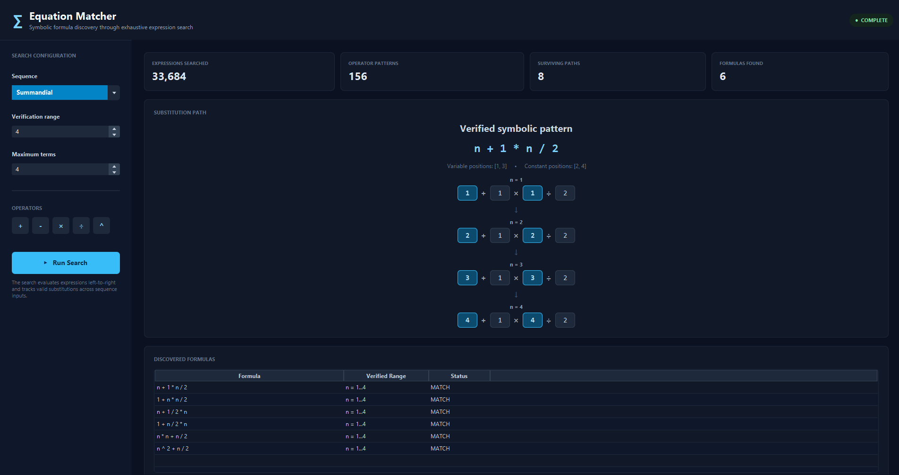
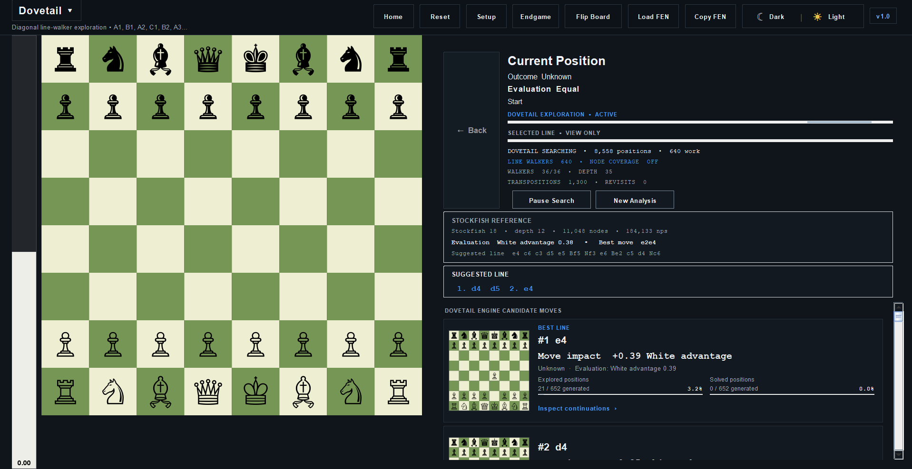
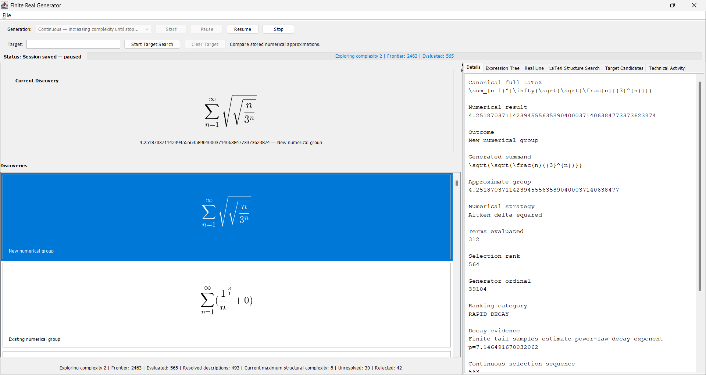

01 / SOFTWARE
Equation Matcher
A SYMBOLIC FORMULA DISCOVERY ENGINE BUILT IN JAVA.
Equation Matcher searches numerical expressions for patterns matching a target sequence and attempts to reconstruct a symbolic formula in terms of n.

MATHEMATICS · COMPUTER SCIENCE
I explore mathematical problems and build software for investigating them.
01 / SOFTWARE
A SYMBOLIC FORMULA DISCOVERY ENGINE BUILT IN JAVA.
Equation Matcher searches numerical expressions for patterns matching a target sequence and attempts to reconstruct a symbolic formula in terms of n.

02 / RESEARCH
An investigation into finite description, diagonalization, and their implications for the cardinality of the real numbers.
03 / SOFTWARE
PERSISTENT GRAPH EXPLORATION · EXACT ENDGAMES · INTERACTIVE ANALYSIS.
A Java chess engine built around a shared canonical position graph. Persistent Dovetail and Hybrid search reuse transpositions across move orders, while exact three- and four-piece tablebases support endgame analysis and practice.

04 / SOFTWARE
A continuous mathematical exploration engine for discovering finite descriptions of real numbers.
A Java exploration engine that continuously generates finite symbolic descriptions of infinite mathematical constructions, numerically investigates their values, and provides tools for searching, inspecting, and resuming discoveries.

I'm interested in mathematics, algorithms, and the boundary between mathematical reasoning and computation.
My work ranges from theoretical mathematical writing to building software that searches for mathematical structure.
Currently studying Mathematics
A.S. MATHEMATICS